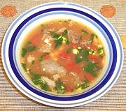

|
Mock Turtle SoupNorth America | ||||
| Serves: Effort: Sched: DoAhead: |
8 soup ** 4-1/2 hr Yes |
This excellent soup was invented in response to the soaring price of green sea turtle long before it was banned entirely. No Mock Turtles are injured in making this soup! | |||
| This is a rude American version, not the refined European recipe, which starts by boiling a whole calf's head to make a clear consommé with strips of calf's head floating in it. It may surprise you, but even the places where I shop don't carry calf heads. Sheep yes, pig rarely, but no calf. | |||||
|
|
2 2 10 10 ----- 1 1/2 4 3 1/4 1 ----- 2 1 3 3 tt 1/4 a/r |
# oz oz --- cl t --- T T c c t |
Ox Tail (1) Eggs, large Onion Diced Tomato -- Seasonings Garlic Lemon - thin skinned Allspice whole Cloves whole Thyme, dry Bay Leaf ----------- Olive Oil Butter Stock (1) Water Salt Pepper Madeira (2) |
Prep - (20 min)
|